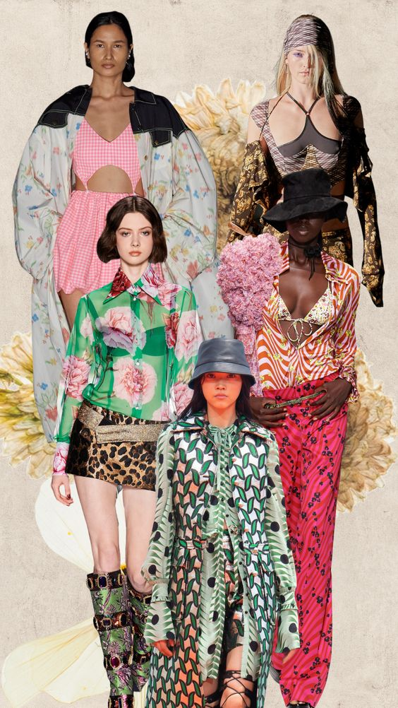

La moda Primavera-Verano 2023 vista en las pasarelas de la semana de la moda indica cómo son las tendencias que llevaremos de cara al estivo. ¿Cómo vestiremos?, ¿qué colores están en boga?, ¿con qué zapatos combinaremos esos jeans que parecen acaparar el armario de las prescriptoras de estilo?
Todas estas incógnitas encuentran su respuesta en los desfiles, ya que fueron el punto de encuentro en donde se dieron cita las estrellas, celebridades y personalidades involucradas en la industria para celebrar lo último de las tendencias vistas en Nueva York, Londres, Milán y París, mismas que llegan hasta el escenario del street style y de las alfombras rojas para resolver el qué y cómo se usan las tendencias este año.
